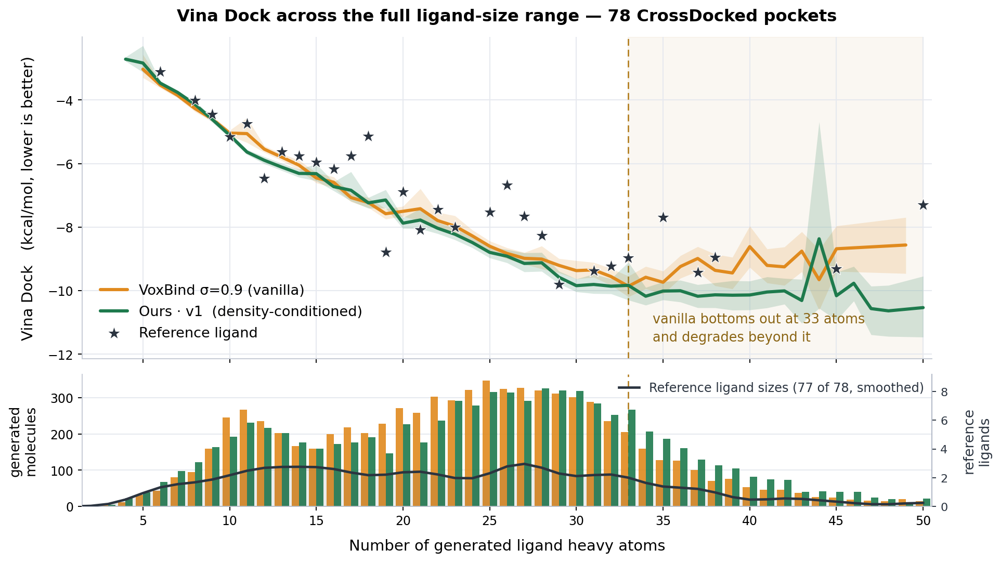
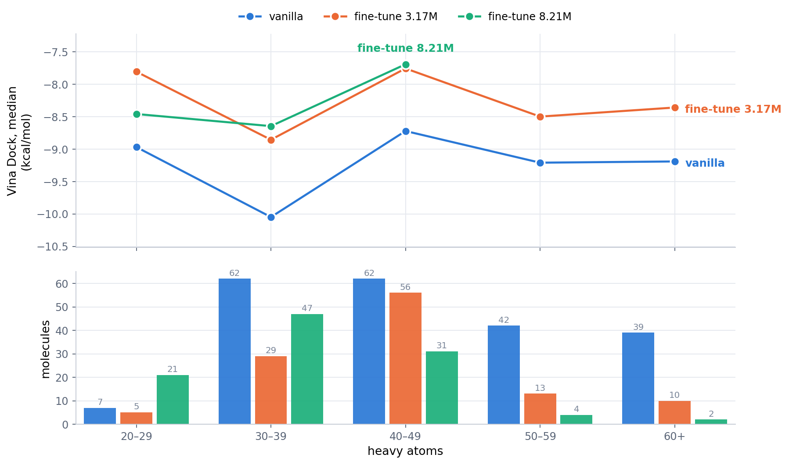

One-sentence intuition for why electron-density information would improve binding-affinity
prediction and drug design.
One-sentence intuitionPlaceholder — the single sentence goes here.
Supporting points:to fill
For affinity:to fill
For design / generation:to fill
1Riken holdout
Held-out evaluation on the RIKEN set — scope, cleanliness, and matched cohort still to be
defined. open question
1.1Cohort definition
What is the RIKEN holdout, how many complexes, and how is leakage controlled? To be confirmed.
Source:define set
Temporal / identity split:define
Downstream-clean:exclude train/val members
Pretraining-clean:exclude SSL overlap
Input-ready:density / structure availability
N:TBD
1.2Results
Method
Cohort
N
Pearson r
Spearman ρ
RMSE
Method
RIKEN holdout
—
—
—
—
2Representation analysis
Probe what the encoder representations capture for pockets and for drug-like ligands.
2.1Pockets
Pocket-side representation analysis — method and figures to fill.
Probe
Target property
Encoder
Metric
Value
Status
Probe
—
—
—
—
todo
2.2Drugs / ligands
Ligand-side representation analysis — method and figures to fill.
Probe
Target property
Encoder
Metric
Value
Status
Probe
—
—
—
—
todo
3PoseCheck & strain energy
PoseCheck evaluation of generated poses, plus a re-check of the strain-energy definition.
3.1Strain-energy definition re-check
Definition under reviewPlaceholder — restate the strain-energy definition being used, the reference convention, and what needs
correcting.
Current definition:to fill
Reference / expected convention:to fill
Discrepancy & fix:to fill
3.2PoseCheck results
Strain energy and steric-clash results per trial — to fill.
(See prior figures: 260813/posecheck_fig6_strain_ecdf.png, posecheck_fig7_steric_clashes.png.)
Trial
Strain energy (median)
Steric clashes
Interactions
Status
—
—
—
—
todo
4Ligand size vs affinity
Ours v1 beats vanilla VoxBind by 0.41 kcal/mol on Vina Dock, and it also draws
0.84 more heavy atoms per molecule. Since Vina rewards size, the two facts have to be separated before the
gain means anything. Binning by generated-ligand size does that directly: inside a bin both models draw
the same-sized molecules, so whatever gap survives is not a size effect.
4.1Vina Dock by generated-ligand size

Figure 1 · Vina Dock at every ligand size, 78 CrossDocked pockets.Top: mean Vina Dock per exact heavy-atom count with a 95% bootstrap band (1,500 resamples,
seed 260827), drawn where at least 20 molecules share that count. Stars are the crystal reference
ligands, one per pocket, at their own size — two at 42 heavy atoms score −15.9 and −14.6 and fall
below the panel. Bottom: how many molecules each model puts at each size (bars, left axis),
with the crystal reference ligands' own size distribution overlaid (red, right axis — 77 of 78 fall
inside the plotted range, Gaussian-smoothed at σ = 1.6 atoms since 78 ligands over 32 distinct sizes
are too sparse raw). The two generated distributions have the same shape, so the curves compare like
with like. Shading starts at 33 heavy atoms, vanilla's best size; the axis is cut at 50, keeping
98.4% of all 15,561 molecules.
Heavy atoms
VoxBind σ=0.9 (vanilla)
Ours · v1
Δ Vina Dock
n
mean [95% CI]
n
mean [95% CI]
ours − vanilla
<12
942
−4.60[−4.71, −4.44]
943
−4.59[−4.66, −4.53]
+0.01
12–15
764
−5.91[−5.97, −5.85]
757
−6.14[−6.21, −6.05]
−0.23
16–19
848
−7.13[−7.21, −7.05]
687
−6.99[−7.11, −6.82]
+0.14
20–23
1,125
−7.68[−7.83, −7.49]
933
−8.01[−8.11, −7.90]
−0.32
24–27
1,322
−8.67[−8.76, −8.59]
1,201
−8.84[−8.94, −8.73]
−0.17
28–31
1,221
−9.23[−9.36, −9.08]
1,248
−9.58[−9.70, −9.44]
−0.35
32–35
729
−9.68[−9.83, −9.52]
914
−9.95[−10.14, −9.72]
−0.28
36–39
375
−9.24[−9.44, −9.02]
510
−10.10[−10.30, −9.90]
−0.87
40+
461
−9.09[−9.31, −8.89]
581
−10.24[−10.51, −9.91]
−1.15
95% CIs are 2,000-resample molecule bootstraps (seed 260827). Green marks a bin where
Ours v1 is ahead, red where it is behind.
4.2What the bins say
The gain is not a size artefact
Ours v1 is ahead in 7 of 9 size bins, and the overall −0.41 sits in the middle of the
per-bin spread. Controlling for size a second way agrees: ligand efficiency (Vina Dock per heavy atom) is
−0.354 for v1 against vanilla's −0.344, better on 47 of 78 pockets, p =
2.6×10−3. The smallest bin (<12 atoms) is a dead heat (+0.01) — there is
little for a conditioning signal to act on at that size, which is the expected null.
More atoms does not simply mean a better score
Below 30 heavy atoms the two curves lie on top of each other — the per-bin gaps of −0.2 to
−0.35 are that difference spread thin. The large end is where they separate. Vanilla
improves with size only to 33 atoms (−9.86) and then degrades: −9.24 at 36,
−8.61 at 40. Ours v1 stays flat near −10. Aggregated, the intervals do not overlap —
vanilla −9.68 [−9.84, −9.51] at 32–35 → −9.16 [−9.31,
−9.01] at 36+, against v1's −9.95 → −10.18 — so the decline is real, not noise.
The gap reaches −0.87 at 36–39 and −1.15 at 40+, roughly three times the mid-range
bins. v1 is less "better at large ligands" than not worse at them.
Reading
Vanilla can draw large molecules but places them worse as they grow; the density-conditioned model keeps
placing them well. It also draws more of them — 14.0% of its molecules carry 36+ heavy atoms
against vanilla's 10.7%. So the practical claim is not "bigger is better" but that density
conditioning makes the large end usable, which is the end that matters for occupying a real pocket.
Vanilla turns where its training data thins out
Reading heavy-atom counts off 8,000 of the 100k CrossDocked training ligands: median 24, 90th
percentile 34. Vanilla's minimum sits at 33 — right at the edge of what it saw. Past that both
models are extrapolating beyond 90% of their training distribution.
Population
n
median
p90
≥33 atoms
≥36 atoms
≥40 atoms
CrossDocked training ligands
8,000
24
34
14.3%
7.6%
4.0%
Test reference ligands
78
22
37
17.9%
11.5%
6.4%
VoxBind σ=0.9 generated
7,787
24
36
17.1%
10.7%
5.9%
Ours · v1 generated
7,774
25
38
22.5%
14.0%
7.5%
8,000 sampled from split_by_name.pt train
(seed 260827), RDKit sanitisation off so nothing is dropped for valence reasons; all 8,000 read.
…but that does not explain why Ours v1 does not turn
The training-scarcity story is the obvious first explanation, and it fails on the last row.
Ours v1 pushes further out of distribution — 22.5% of its molecules carry 33+ heavy atoms
against the training set's 14.3% — and holds −10 there while vanilla falls to −8.6. Same
data, same architecture; the density channel is the only difference. Whether the conditioning is what
buys that out-of-distribution robustness is untested.
Discriminating experiment: the apo variant — same architecture, ligand density masked out.
If it turns at 33 like vanilla, the density channel carries the robustness; if it holds like v1, the
architecture does. That run exists at ep350 and only needs the size-binned analysis re-run on it.
Also not yet tested: whether vanilla's large molecules are a different chemotype rather than
simply misplaced. Splitting the 33+ region by pocket volume would separate "wrong molecule" from
"wrong placement".
Caveat: Vina Dock re-searches the pose, so this measures the molecule, not the
generated geometry. Section 3's strain numbers say Ours v1 pays for its contact with
1.3× vanilla's strain — the size advantage here does not carry over to pose quality.
Protocol: 78 pockets (79 with ligand X-ray density, minus target_71, whose
truncated crop fails receptor preparation) · ~100 molecules per pocket · Vina
exhaustiveness 16 · pocket10 crop. Full tables in
results_drug_design.html.
5MCP fine-tuning results
The receptor-ED ControlNet fine-tune of the macrocyclic-peptide generator, re-scored at
8.21M samples against the same run at 3.17M and against the density-free vanilla model. Same 10 held-out
MCP targets and the same sampling budget as the 08-20 comparison, so the three arms are directly comparable.
measured
2.6× more fine-tuning bought
nothing
Yield still half of vanilla; binding unchanged once size is controlled.
What actually moved
45 → 35
Median heavy atoms. 65% of molecules now under 40 (was 29%).
Vina Dock, median
−8.38
vs −8.15 at 3.17M and −9.34 vanilla. The 0.23 gain is size, not binding.
Bottom line
The fine-tune did not get better at binding — it got smaller. QED 0.19 → 0.37,
SA 0.48 → 0.55 and ligand efficiency 0.182 → 0.239 all move in the flattering
direction, and all three are what happens automatically when a 45-heavy-atom peptide becomes a 35-heavy-atom one.
Bin by size and the gain disappears: vanilla wins every bin, and the two fine-tune checkpoints trade places.
This is §4's confound appearing again, in a different model family.
5.1Setup
Base model: FuncBind MCP fb_unified, density-free, 87.2M samples seen — the
“vanilla” arm, unchanged since 08-20.
Fine-tune scope: receptor-ED ControlNet with zero-init zero-convs on top of that base, encoder trunk
frozen. Two checkpoints of one resume chain: _r3 at 3.17M and _r10 at
8,206,956 samples. Checkpoints are ranked by acc_iter, never by epoch — every resume
restarts the epoch counter, so _r10 reads epoch 17 while being the furthest along.
Sampling: 25 samples per receptor, 256 chains, 1 attempt, seed 1 — identical for all three arms.
Vanilla was not re-sampled: same checkpoint, same settings, same seed, so the 08-20 samples are the baseline.
Docking: the whole deposited receptor (<pdb>-protein.pdb), box derived from the
crystal cyclic peptide (<pdb>-CP.sdf), Vina exhaustiveness 16.
5.2Yield
Molecules returned per target out of a 25-molecule quota, on an identical budget. The
shortfall the 08-20 run found is still there at 8.21M: 106 molecules against vanilla's 213, and only two
targets filled. It is not uniform — 1bxo and 1jd2 improved, 2bdx collapsed, and 3dv5 produced its first
molecule from any model.
Target
PDB
vanilla
fine-tune 3.17M
fine-tune 8.21M
Δ 8.21M − 3.17M
target_00
1bm2
25
25
25
0
target_01
1bxo
25
9
13
+4
target_02
1jd2
25
2
6
+4
target_03
1kmh
25
3
1
−2
target_04
1w0e
14
25
25
0
target_05
2bdx
25
25
10
−15
target_06
2gpl
25
17
14
−3
target_07
3dv5
0
0
1
+1
target_08
3e7a
24
7
6
−1
target_09
3egh
25
5
5
0
Total
—
213
118
106
−12
Targets at full quota
—
7 / 10
3 / 10
2 / 10
−1
5.3Chemistry and docking
Size, QED, SA, Vina and ligand efficiency are pooled over all molecules, so a target that
returned one molecule does not weigh as much as one that returned 25; validity, uniqueness, diversity and high
affinity are per-target means, which is how the docking driver reports them. Cyclization and validity hold at 100% on every arm — the structural
contract of MCP generation is intact; what changed is size. QED and SA are calibrated on small drug-like
molecules, so a 35-heavy-atom peptide scores better than a 46-heavy-atom one by construction; read them as size
proxies here, not as drug-likeness.
Metric
vanilla
fine-tune 3.17M
fine-tune 8.21M
Molecules
213
118
106
Validity / cyclization
1.000 / 100%
1.000 / 100%
1.000 / 100%
Uniqueness
0.982
0.982
0.984
Diversity
0.475
0.468
0.454
Heavy atoms, mean / median
47.9 / 46
47.7 / 45
36.8 / 35
Under 40 heavy atoms
32%
29%
65%
Residues per molecule
6.6
6.8
5.9
QED
0.200
0.211
0.346
SA
0.490
0.501
0.555
Vina Dock, median
−9.34
−8.15
−8.38
Vina Dock, mean
−9.44
−7.77
−8.54
Ligand efficiency, median
0.194
0.182
0.239
High affinity (vs crystal peptide)
0.420
0.256
0.314
Best of the three, per target
7 / 9
0 / 9
2 / 9
Ligand efficiency is −Dock / heavy atoms, and it rewards small molecules by
construction — the 8.21M arm leading it is the same fact as its size drop, not an independent result. Docking
statistics use the 9 targets every arm produced molecules for; 3dv5 is excluded because only the 8.21M arm has
anything there.
5.4Inside a size bin, the gain is gone

Figure 2 · Vina Dock by peptide size, 9 held-out MCP targets.Top: median Vina Dock inside each heavy-atom bin, drawn only where an arm has at least 5 molecules in
that bin — which is why the 8.21M line stops at 40–49 (it puts 4 and 2 molecules in the last two bins).
Inside a bin all three arms draw the same-sized peptides, so a surviving gap is a binding difference and not
a size one. Bottom: how many molecules each arm puts in each bin — median size 46 (vanilla),
45 (3.17M), 35 (8.21M). The top panel is trustworthy only where the bottom panel has bars.
Heavy atoms
vanilla
fine-tune 3.17M
fine-tune 8.21M
n
Dock median
n
Dock median
n
Dock median
20–29
7
−8.97
5
−7.80
21
−8.46
30–39
62
−10.05
29
−8.86
47
−8.64
40–49
62
−8.72
56
−7.75
31
−7.69
50–59
42
−9.21
13
−8.50
4
—
60+
39
−9.19
10
−8.36
2
—
Vanilla is best in every bin by roughly 1 kcal/mol, and the two fine-tune checkpoints are
within noise of each other — 8.21M is ahead at 20–29, behind at 30–39 and 40–49. The pooled 0.23 kcal/mol
that 8.21M appears to gain over 3.17M is a mix effect: it moved molecules into bins that happen to score better,
not molecules that bind better.
5.5Caveats
One attempt, one seed.n_attempts=1 against the paper configuration's 10, so a failed
attempt is unrecoverable and absolute yields are low for every arm. The budget is identical across arms, so
the comparison holds, but read the yields as relative.
Thin per-target counts. The fine-tune arms return 1–25 molecules per target, so per-target numbers are
noisy; 1kmh and 3dv5 rest on a single molecule at 8.21M.
Next question, not answered here: whether the size collapse is something the fine-tuning objective
rewards, and whether raising n_attempts closes the yield gap.
AAppendix · Riken holdout dataset — why it's not plug-and-play
The RIKEN ChEMBL-derived benchmark (Shimizu et al., Chem-Bio Informatics J. 26:11, 2026 —
the Boltz-2 affinity paper) is already curated and leakage-audited locally at
base/chembl35_plinder30. It is attractive as a genuinely held-out set, but our density model
cannot be run on it directly. Parked for now. parked
What the benchmark actually is
A per-target ligand-ranking (virtual-screening) task: a fixed target pocket with many candidate ligands,
each carrying a median-pChEMBL label (IC50/Ki/Kd/EC50 mixed). Primary metric is macro per-target Spearman
— rank a compound series within each target, not cross-target absolute affinity.
Frozen cohort: 23 targets / 618 pairs (615 model-ready), the subset of the paper's 99 targets that passes
our <30% sequence-identity audit against both PLINDER-v2 pretraining and LP-EDRSCC train/val.
Reference to beat — Boltz-2 macro-ρ 0.165 (all 23 targets) / 0.344 (256-pair rankable core).
Ligand side is sequence + SMILES only. The affinity pairs (Data S2/S6: UniProt + SMILES + pChEMBL)
carry no bound complex and no pose — these are ChEMBL bioassay compounds, never co-crystallized.
No ligand electron density. Our headline C+D+G ligand-density channel has no experimental source
here, so a clean experimental CDG evaluation is impossible (prepare_density.py errors by design).
Pocket structure exists — but for a different ligand. Each of the 23 targets has one representative
PDB, so pocket structure/density is obtainable; however it holds a different ligand or is apo, and
3/23 are only distant templates (26–48% identity to the assay construct).
Requires pose generation. To score at all we'd have to dock / co-fold each ligand into the shared
pocket → coords-only (C), ligand-density zero-filled (which we already know hurts).
Structurally hard targets. Several are membrane proteins / channels / transporters (TRPA1, GPR84,
ABCG2, TLR2, MCT1, HHAT) and intrinsically disordered proteins (Myc, tau, α-synuclein, NRF2), where
docking-pose reliability is low.
Bottom line: full experimental CDG is ruled out; a “real pocket density +
generated ligand pose” hybrid is technically feasible but pose-quality-limited. Deferred until we decide
it's worth the SBVS detour.